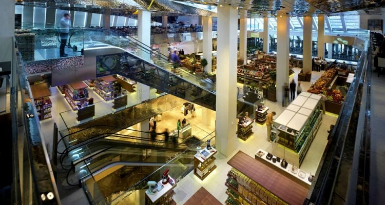

大型购物商场和百货公司
#斯维特诺伊中心商场#
斯维特诺伊中心市场是莫斯科老牌的高档商场，有各种高档品牌和奢侈品，同时也是集购物、餐饮和娱乐为一体的综合性商场。
地址：Tsvetnoy Blvd, 15, Bldg 2, Moscow

图：斯维特诺伊中心商场
#莫斯科国家百货商场#
莫斯科国家百货商场位于红场东北角，又称国家百货公司，被当地人亲切的称作“古姆”。商场建成于19世纪，是俄罗斯最大的商场，是莫斯科最时尚的休闲购物场所之一。三排三层游廊式商场占地近25000平方米，店铺之多让人咋舌。即使不去购物，光是参观下这个商场的装潢和建筑也值得专程走一趟。
地址：Revolutionary Square, Moscow
#中央商场#
莫斯科最高级的商场之一，商场内各种大牌云集。也同样是集购物、餐饮、娱乐为一体的综合商场，适合在这里泡上一整天。
地址：2 Petrovka Street, 103779 Moscow
商铺市集和主题购物街
#老阿尔巴特街#
老阿尔巴特街是莫斯科市中心一条商业步行街，曾经盛极一时。搭乘地铁到Arbatskaya站，下车就能看到这条街。有的时候还会有集市，除了游客还有很多当地人喜欢逛这里。就算不买纪念品，在咖啡店消磨一下午也是个不错的选择。
地址： Ulitsa Arbat, Moscow
#OKHOTNY RYAD购物中心#
商场里的店铺可以满足各个收入水平的消费者。这里通常都挤满了顾客，一楼有一个被挤得水泄不通的很大的美食广场。
地址： Manezhnaya pl, 1 Moscow
#马涅什广场地下商场#
广场下有地下商场，1997年正式开放，投资3.5亿美元，历时三年建成，属于大型地下商场，共有88家商店，16家餐厅和咖啡厅，集购物饮食为一体的综合商场，是购物的理想场所。
地址：Kiev Railway Station Square, Moscow

图：马涅什广场地下商场
本地品牌
#阿廖卡#
莫斯科“红色十月”工厂最著名的糖果品牌。这款牛奶巧克力的包装上有一个包着头巾的小女孩，曾到过俄罗斯的人们都对它非常熟悉。这种巧克力至今仍以其口感丝滑而备受喜爱。
# LIZA ODINOKIKH#
这个品牌也创立于 2012 年，创始人 Odinokikh 说她非常喜欢莫斯科，因为这里有的时尚圈更大一些，这一季的主题是浪漫主义和粗野的结合。
#皇冠Smirnoff#
皇冠Smirnoff，世界十大名酒之一。帝俄时代的1818年， 在莫斯科建立了皇冠伏特加酒厂（Pierre Smirnoff Fils），1917年十月革命后，仍为一个家族企业。1930年，其配方被带到美国，在美国建立了皇冠伏特加酒厂。
图：皇冠Smirnoff
特色礼品
#套娃#
无论是东方人还是西方人，只要到了俄罗斯，都要带回一种极富民族特色的纪念品——玛特廖什卡。在异国人眼里，它几乎是俄罗斯传统工艺品的象征。传统的木娃娃被雕塑成一个圆脸的农村姑娘形象，她身穿绣花衬衣和长马甲，系着为围裙，头上扎一块花头巾，怀里还抱着一只黑公鸡。
木娃可以拆开，里面装一个小一些的，也 可以打开，这样一个套一个，共有8个，不仅大小不一，色彩图案也不尽相同。现在的套娃已经演变成各式各样的了，有扁的有圆的，有美丽的村姑，有严肃的俄罗斯历来总统。
图：套娃
#伏特加酒#
伏特加是俄罗斯的传统酒精饮料，以谷物或马铃薯为原料，经过蒸馏制成高达95度的酒精，再用蒸馏水淡化至40度到60度，并经过活性炭过滤，使酒质更加晶莹澄澈，无色且清淡爽口，使人感到不甜、不苦、不涩，只有烈焰般的刺激，形成伏特加酒独具一格的特色。
#俄罗斯纯银器#
俄罗斯纯银器可以说是银器中的王者，俄罗斯的银器采用了金银丝细工、银器雕刻、珐琅金银丝细工和多色珐琅等多种工艺，在19世纪末期和20世纪初期达到了银器工艺品的“黄金时代”。
退税
非欧亚经济联盟国家的公民（即除白俄罗斯、哈萨克斯坦、吉尔吉斯斯坦、亚美尼亚以外国家的公民），在俄境内购买的商品出境时将可享受退还商品价格中包含的18%的增值税。
外国公民在购物满1万卢布（约合1178元人民币）的条件下可以享受退税。能够退税的商品不包括在俄应征收消费税的商品，如酒类、香烟、汽车、摩托车、汽柴油燃料等。